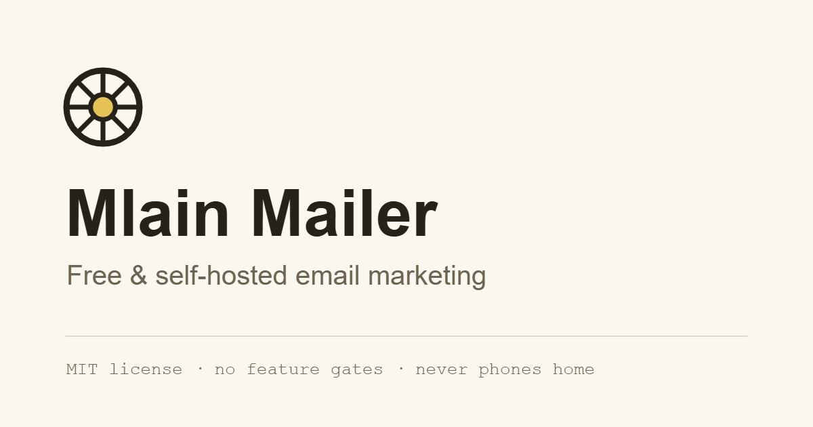

Barvy
Gradienty se nepoužívají. Všechny hodnoty jsou v :root ve style.css.
Light mode
Dark mode
Stejné proměnné, jiné hodnoty — přepíná je atribut data-theme="dark" na <html>. Volbu drží cookie wm_theme (rok, SameSite=Lax); bez cookie rozhoduje prefers-color-scheme, bez něj je výchozí light. Beze změny zůstávají --wm-color__primary a __primary-strong (žlutá je identita) a panelové barvy __panel-fg, __panel-muted, __panel-soft, __panel-line — tmavé panely jsou v obou módech stejné, v dark modu jen o odstín tmavší než pozadí. Tlačítka drží inkoustový text na žluté v obou módech.
Písma
IBM Plex Sans Regular 400 — základní text, formuláře, tabulky
--wm-font-family__base · fallback: "Segoe UI", Arial, sans-serifIBM Plex Sans SemiBold 600 — nadpisy, tlačítka, tučný text
strong i nadpisy používají 600, řez 700 se nenačítáIBM Plex Mono Regular 400 — timeline, kód, štítky, meta údaje
--wm-font-family__mono · fallback: ui-monospace, Consolas, monospaceSubset latin-ext. Zatím Google Fonts CDN jako dočasný fallback — postup self-hostingu je v assets/fonts/README.md, připravený @font-face blok na začátku style.css.
Velikosti písma
Nadpis h1
--wm-font-size__h1 · clamp(3.6rem, 2.6rem + 2.2vw, 5.4rem) · 600 · line-height 1.12Nadpis h2
--wm-font-size__h2 · clamp(2.6rem, 2.1rem + 1.1vw, 3.6rem) · 600 · line-height 1.12Nadpis h3
--wm-font-size__h3 · clamp(1.9rem, 1.75rem + 0.35vw, 2.2rem) · 600 · line-height 1.12Perex — uvozující odstavec sekce
--wm-font-size__lead · clamp(1.8rem, 1.7rem + 0.25vw, 2rem) · line-height 1.6Základní text odstavců
--wm-font-size__base · 1.7rem (17px) · line-height 1.6Menší text — karty, tabulky, popisy
--wm-font-size__sm · 1.5rem (15px)Drobný text — poznámky, meta údaje
--wm-font-size__xs · 1.3rem (13px)14:07 monospace log — timeline a výpisy
--wm-font-size__mono · 1.4rem (14px) · line-height 1.9Spacing
Násobky 5 px. Vertikální rytmus sekcí řídí --wm-space__section: 120px, pod 760px 70px.
Tlačítka
Stavy: hover ztmavuje žlutou na --wm-color__primary-strong, focus má 2px obrys s odsazením, active posune tlačítko o 1px dolů, disabled šedne a mění kurzor. Vše si vyzkoušej myší a klávesnicí.
Odkazy
Výchozí odkaz v textu je okrový s podtržením. Navštívený odkaz lehce zhnědne, hover ztmavne a zesílí podtržení, active přejde do barvy textu, focus má stejný obrys jako všechny interaktivní prvky.
Navigační odkazy (menu, patička) podtržení nemají a drží barvu textu — viz komponenty header a footer.
Ukázka odstavce
Mlain Mailer runs on your own server, so the bill stays flat no matter how the list grows. The software is MIT licensed and every feature ships in the public repository — there is no paid tier to unlock.
Seznamy
- Odrážkový seznam s pomlčkou v akcentové barvě
- Mezery mezi položkami řeší gap na kontejneru
- Delší položka: import zvládne rozbitá data — deset vadných adres neshodí soubor s tisícem řádků
- Číslovaný seznam s monospace číslicí
- Používá se pro kroky a postupy
- Číslice je jen vizuální, pořadí nese <ol>
Tabulka
| Kanál | Cena | Doporučení |
|---|---|---|
| Amazon SES | $1 / 10 000 e-mailů | nad ~2 000 e-mailů denně |
| Vlastní SMTP | v ceně hostingu | do ~2 000 e-mailů denně |
Citace
Self-hosting trades money for responsibility. We say that on the pricing section, not in a footnote.
— zásada obsahu webu
Formuláře
Ikonová sada
Mřížka 24×24, ochranná zóna 2px (čárkovaně). Inline verze nesou fill="currentColor"; uložené soubory v assets/icons/ nesou hex níže — při změně tokenu --wm-color__icon se soubory přegenerují, inline verze se přebarví samy.
Velikostní tokeny
Ikona v textu
Odkaz s dekorativní ikonou: knihovna komponent
Ikonové tlačítko
Přístupný název nese vizuálně skrytý text v tlačítku, SVG je aria-hidden. Klikací plocha 44×44 px, hover zesvětlí podklad, focus má žlutý obrys (na tmavém panelu se přepisuje --wm-color__focus).
Favicon
Odvozeno z dummy značky — po dodání finálního loga přegenerovat.
Přehled komponent (sekcí)
Kompletní sada. Než založíš novou sekci, zkus variantu existující — ukázky v plném rozsahu jsou v komponenty.html.
.wm-header— hlavička- Logo + vyměnitelný název aplikace (text v .wm-header__name), hlavní menu, tlačítko GitHub. Volitelné: tlačítko GitHub. Poslední prvek: přepínač light/dark módu (__theme). Pod 980px menu skládá do panelu. Ukázka
.wm-hero— úvod homepage- Text vlevo, koláž app oken vpravo. Volitelné: sekundární tlačítko, trust řádek, druhé okno koláže. Ukázka
.wm-features— mřížka vlastností- Bento mřížka na 6 sloupcích: boxy šíře 2/3/4 sloupců (--span-3, --span-4), tónované varianty --tinted a --inverse, mono eyebrow s číslem. Volitelné: perex, eyebrow, mono ukázka (__sample). Ukázka
.wm-timeline— vlajková sekce trackingu- Text + tmavý monospace log, pod tím kroky „how it works“. Volitelné: věta pod logem, blok kroků, mono poznámka. Ukázka
.wm-compare— cenové srovnání- HTML/CSS sloupcový graf + tabulka s přesnými čísly. Volitelné: graf s legendou (tabulka je vždy), výpočet, disclaimer. Zvýraznění vlastních řádků: --self. Ukázka
.wm-install— instalace- Kopírovatelný snippet, karty odesílacích kanálů, fakta v <dl>, odkaz na docs. Volitelné: druhá karta, řádek pod kartami, fakta, odkaz. Ukázka
.wm-roadmap— stavový výpis- Kompaktní seznam se štítky .wm-badge (--done / --progress / výchozí Planned). Volitelné: závěrečná věta s odkazem. Ukázka
.wm-faq— akordeon- Nativní <details>/<summary>, hairline oddělovače. Volitelné: perex; počet položek libovolný. Ukázka
.wm-cta— závěrečná výzva- Nadpis + tlačítka na střed. Varianta --inverse (tmavý panel). Volitelné: perex, sekundární tlačítko. Ukázka
.wm-changelog— výpis verzí- Keep a Changelog: verze + datum, kategorie Added/Changed/Fixed/Security jen když mají obsah. Volitelné: úvodní odstavec. Ukázka
.wm-prose— centrovaný obsah- Stránky bez designu na míru (GDPR, docs, licence) — typografie ze styleguide v šířce 720px. Ukázka
.wm-footer— patička- Logo + vyměnitelný název, navigace, meta řádek. Volitelné: meta řádek. Ukázka
Layout
- Kontejner sekcí:
--wm-layout__container1160px, boční padding--wm-layout__pad40px (pod 760px 20px) - Šířka běžného obsahu:
--wm-layout__content720px (prose), širší výpisy 840px - Breakpoint 980px — menu do panelu, hero a timeline do jednoho sloupce, mřížky na 2 sloupce
- Breakpoint 760px — padding 20px, sekce 70px, jednosloupcové mřížky, skrytí druhého okna koláže
- Breakpoint 560px — kroky a tlačítka akcí přes celou šířku
- Přístup desktop-first, media queries přes max-width; sticky prvky přes position: sticky
Social meta image
